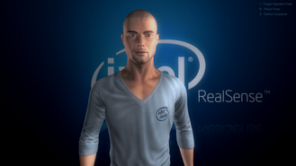
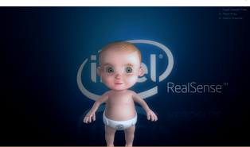
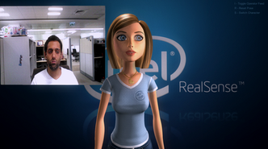

The DF_FaceAnimation showcases a 3D avatar – a virtual character which mimics the user’s facial expressions. The sample uses the Unity game engine for 3D visualization and animation.
Directory Structure
Directory/File |
Description |
Assets |
The Unity assets and project setting directories that contain source code. |
ProjectSettings |
Operation Instructions
The sample is located under $(RSSDK_DIR)/framework/Unity/DF_FaceAnimation. Copy the sample source to a writable folder and click Assets/Face Tracking Demo Scene.unity to launch the sample project. You can build the sample or make any modification. The sample is tested under Unity Pro 4.3.4f1.
The sample displays a 3D cartoon model at the center of the screen.
Click the S key to toggle different 3D avatars.

You can reset the head orientation with the R key, and show/hide a camera viewer with the I key:

 If you see a warning message "NullReferenceException: Object reference not set to an instance of an object UnityEditor.DockArea.OnGUI()" while running your application in Unity Editor, close the Game and Scene windows and redo the window layout. The warning message should go away after the layout change. See also http://neareal.net/index.php?ComputerGraphics%2FUnity%2FTips%2FError%20UnityEditor.DockArea.OnGui() (In Japanese.)
If you see a warning message "NullReferenceException: Object reference not set to an instance of an object UnityEditor.DockArea.OnGUI()" while running your application in Unity Editor, close the Game and Scene windows and redo the window layout. The warning message should go away after the layout change. See also http://neareal.net/index.php?ComputerGraphics%2FUnity%2FTips%2FError%20UnityEditor.DockArea.OnGui() (In Japanese.)